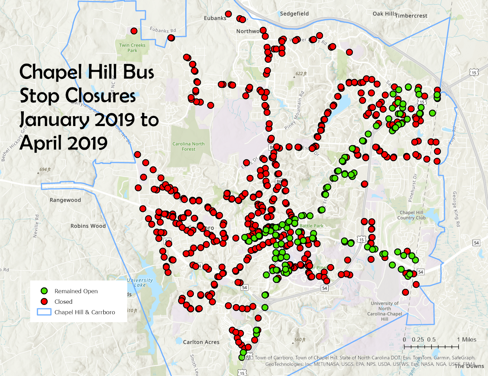

Chapel Hill Transit Ridership Recovery Post COVID-19
GEOG-456 Final Project - Suzanne Tyler
Data for this project was provided by Carolina Dwyer, Planning Manager for Chapel Hill Transit.
Introduction and Motivation
Public transportation was heavily impacted by the COVID-19 pandemic, and in many areas has failed to bounce back to pre-pandemic levels. Chapel Hill Transit has yet to return to pre-pandemic employee numbers or route frequency. In this project, I have attempted to visualize the impact of COVID on bus ridership in Chapel Hill in order to analyze the continued impacts of the pandemic, and pinpoint where ridership remains low.
Initial Impact of COVID-19 on Chapel Hill Transit
Between January 2019 and April 2019, 445 out of 583 operating bus stops in Chapel Hill were closed.

goals for this section:
maps showing comparison between 2019 and 2020 data sets
if arcgis pro:
(1) side-by-side maps of in service stops, dec 2019 vs april 2020
(2) side-by-side maps of ridership density proportional symbol maps (OVERLAPPING PROP SYMBOLS)
(3) slider ? or maybe some types of graphs or something
Ridership Recovery from 2021 - 2024
THE MAP